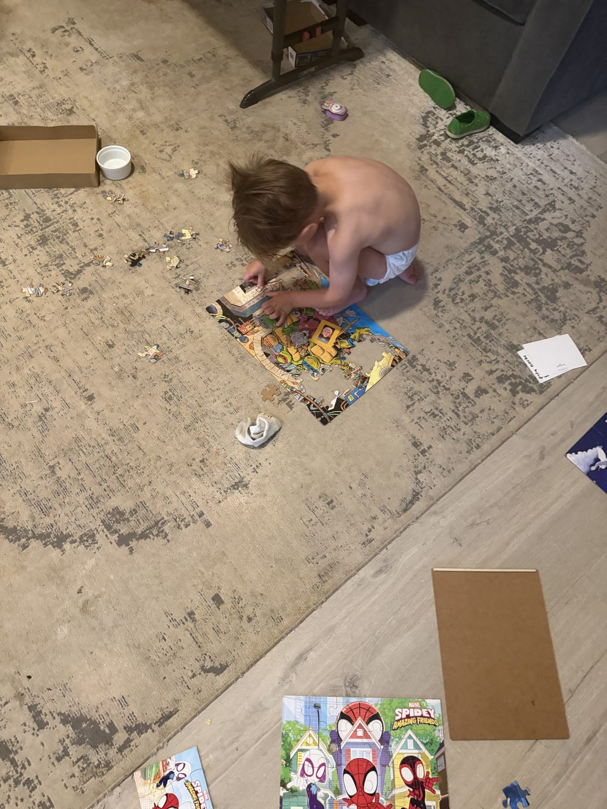

This year I've been chasing something I'd call differentiated leadership. Not a program, more a conviction: the kind of leader I want to be, the one with the energy and the fortitude to actually walk out what I believe, has to come from somewhere. It doesn't just show up on a Sunday. It gets built in the ordinary hours nobody sees.
For a long time, my kids woke me up. I'd lie in bed until the first cry or the first small body climbing onto the mattress, and every morning felt like starting the day already behind. I carried real shame about that. I knew what I was convicted to do, go to bed on time, get up before my family, spend time in the Word, move my body, sit with my wife over coffee and pray and talk schedules and finances before the chaos started, and I just wasn't doing it. So this year I made the change. Lights out on time. Up early. Fed and grounded before anyone else in the house is awake.
That's the backdrop. Here's the puzzle.
Daddy's Puzzle
I got some Marvel puzzles for Christmas and never touched them. Then in June I found the Spider-Man one sitting in our closet with the games, and I wanted to build it. But I hesitated. We have three kids, and our youngest is two, a boy with more energy than sense, who wants to do whatever I'm doing. A thousand piece puzzle is nowhere close to something he could help with, and I could already picture the frustration, mine and his, if he got into it.
So I almost didn't do it. It felt selfish somehow, like I'd be shutting him out of something instead of inviting him in.
I did it anyway. I told him, this is Daddy's puzzle. Daddy's going to build this, and you can watch, but this one's mine to finish. It took about a week and a half, a little each day, left out on the table in between. And every day he got more curious. At first he had no idea what he was looking at. Then, piece by piece, it clicked. That's Spider-Man. You're making Spider-Man. He started asking every single day: Daddy, you gonna do your puzzle? Some days he got frustrated that he couldn't touch it. I held the boundary anyway.
What I Didn't Expect
By the time I finished, he'd pulled out every one of his own puzzles, the nine piece ones, the twelve, the twenty four, and started doing them constantly. Our living room turned into a puzzle workshop. He'd get frustrated at first, then keep going, and within a week or two he was finishing twenty four piece puzzles by himself, ones I honestly wasn't sure he could handle yet. Every time he finished one on his own, he threw his hands up and celebrated like he'd won something. Because he had.

I didn't teach him to do that. I just did my own thing, in front of him, and let him watch. He caught something from watching, not from being handed the answer.
That's the lesson that stuck with me. What I spend my time doing, even something as small as a hobby, leaves a mark on my kids. Good, bad, or ugly, they're catching something from what they watch me pursue, not just from what I tell them to do.
The Weightier Example
I see this same pattern in how God works, and ultimately in Jesus. Jesus put on flesh and gave us an example by actually living out the things he calls us to, not just teaching them from a distance. There's a moment in his ministry where he tells the disciples he has to go to the cross, and Peter says, I'll die, I'll go with you.
Simon Peter asked him, "Lord, where are you going?" Jesus replied, "Where I am going, you cannot follow now, but you will follow later." Peter asked, "Lord, why can't I follow you now? I will lay down my life for you." (John 13:36-37)
That wasn't Jesus leaving Peter out. It was Jesus going first, giving Peter something to watch before Peter would ever be asked to do it himself. And Peter did do it, later laying his own life down for the same Messiah, crucified upside down according to church history, following the exact pattern he'd first only been allowed to watch.
Paul says the same thing a different way, and he says it without flinching: "Follow my example, as I follow the example of Christ" (1 Corinthians 11:1). That's a bold sentence. It only works if you're actually doing the thing in front of people, not just describing it to them.
The Question I'm Left With
I built a puzzle because I wanted to, and it turned into something bigger than I expected, not because I performed it as a lesson, but because I just did the thing that mattered to me and let my son watch.
So here's what I'm asking myself, and maybe you too: What are you doing to pursue the convictions and passions God's put in you? The hobbies you keep putting off, the disciplines you know you're called to, the things that are genuinely just for you? And who's watching you do them, whether you realize it or not?
Whatever you're building, in front of your kids, your team, the people who trust you to lead them, they're catching something. Make sure it's worth catching.
Scripture: John 13:36-37; 1 Corinthians 11:1 (NIV).